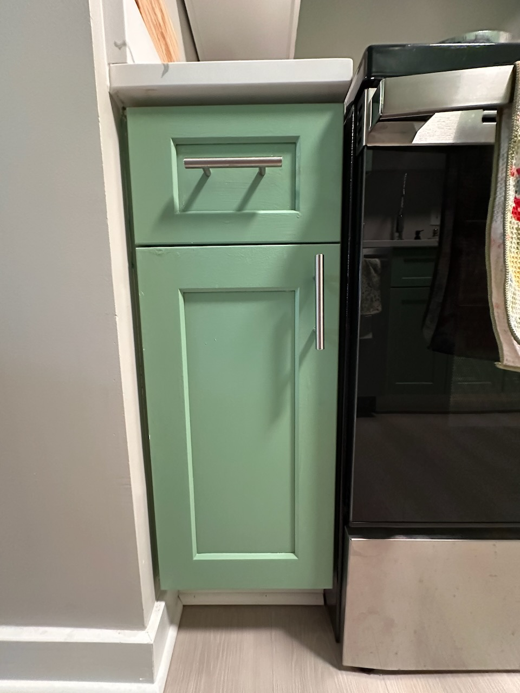
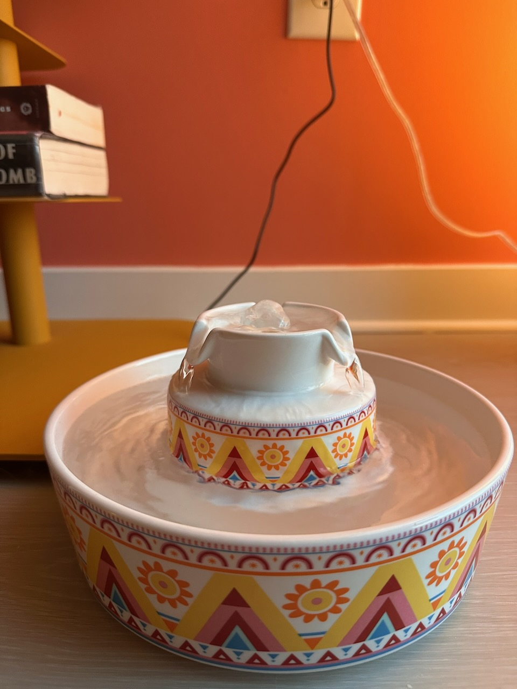

K. u. K. Hoflieferant
"Ich bin der letzte Monarch der alten Schule..."
— Kaiser Franz Joseph I.
[ Tap Her Majesty To Open ]
Leipzig: Karl Baedeker
"Die Schönheit ist ein offener Empfehlungsbrief, der die Herzen im Voraus für uns gewinnt."
— Arthur Schopenhauer
"Gewisse Bücher scheinen geschrieben zu sein, nicht damit man daraus lerne, sondern damit man wisse, daß der Verfasser etwas gewußt hat."
— Johann Wolfgang von Goethe
Chapter I
A pâté worthy of her beauty is served each evening. Stir it gently in its crystal vessel. For the prosperity of the empire, add 1/8 tsp of Lysine and half the measuring cup of her Proden Plaqueoff.
The supply of dry delicacies is replenished by unseen magic. A weekly polishing of her serving dish is essential.
Churu: Offer this ambrosia as a token of adoration.
Katzenminze (Catnip): A sprinkle of this euphoric herb shall send Her Majesty into joyous reverie.
* Both sacred offerings are safely secreted away within the lower left drawer of the grand media cabinet.
Her royal water fountain must be renewed every two days. Note: The top and base of the fountain are not connected; handle with care.
Chapter II
A soul of such sensitivity requires moments of whim and play. It is your sacred duty to delight Her Majesty.
Capture a beam of light at dusk and let it dance like a firefly through her chambers.
Let small feathers and shining orbs bounce from the furniture like notes in a symphony.
Chapter III
Her coat requires your most delicate touch. The green brush smooths the strands, while the blue comb resolves any tiny imperfection.
Her eyes, twin emeralds of startling clarity, must be free of any blemish. A gentle touch ensures her gaze continues to enchant.
Although rare, under certain circumstances, her rear may be compromised. Cleansing wipes befitting her station are located in the lower left cabinet adjacent to the range.
Chapter IV
Should the Empress interrupt the cycle, delicately extricate Her Majesty to an alternative salon, securely close the doors, and await completion.
A moving portrait demonstrating the sacred purification rites.
Royal Decree • Urgent
"Der Mut ist die höchste Eigenschaft des Geistes."
— Carl von Clausewitz

It is decreed that the sacred supplements must be integrated thoroughly into Her Majesty's royal meal.
